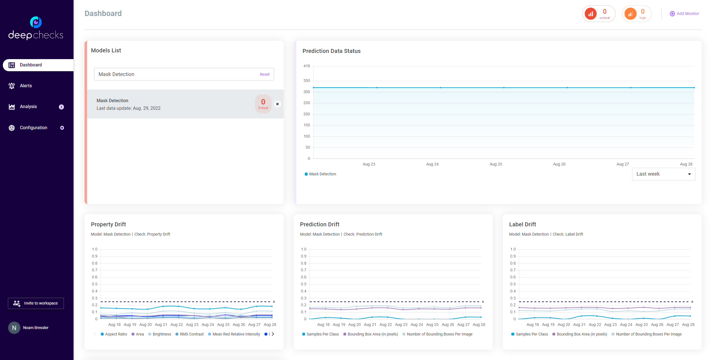

Note
Click here to download the full example code
Quickstart - Get Deepchecks Monitoring Up and Running for Computer Vision Data#
This quickstart is the perfect starting point for monitoring your vision model using Deepchecks Monitoring. We’ll quickly walk you through setting up a model to represent your task in the system, uploading data, setting the computed checks and alerts in the system and seeing some results for your effort. We’ll be using the Mask Detection Dataset, in which the goal of the model is to detect faces, and classify whether the face is wearing a mask, partially wearing a mask or not wearing a mask.
# Before we start, if you don't have deepchecks-client installed yet, run:
import sys
!{sys.executable} -m pip install -U deepchecks-client
# or install using pip from your python environment
Creating a New Model Version#
Our first step is to create a new model version in the system. A model in Deepchecks Monitoring represents an ML pipeline performing a single task in production through time, where the model’s versions and the structure of the data may change over time. Our terminology to refer to a specific version within a model is “model version”.
The easiest way to create a model version, which is demonstrated here, requires a Vision Data object containing the reference data for the version. Reference data is a dataset to which we wish to compare our production data stream. Typically, this will be the dataset on which the model was trained. Providing reference data is optional yet many important checks such as Train Test Prediction Drift (Vision Version) cannot run without it.
Preparing the Reference Data#
In this example we’re loading a pre-made VisionData object containing the data at the first time stamp, with which the model was trained. In order to create your own VisionData object from your own pytorch dataloader please read the Vision Data documentation or follow the appropriate deepchecks computer vision quickstart.
from deepchecks.vision.datasets.detection.mask import load_dataset, load_model, get_data_timestamps
ref_dataset = load_dataset(day_index=0, object_type='VisionData', shuffle=False)
model = load_model()
0%| | 0/416968083 [00:00<?, ?it/s]
0%| | 54272/416968083 [00:00<16:57, 409679.82it/s]
0%| | 251904/416968083 [00:00<06:41, 1038995.86it/s]
0%| | 1070080/416968083 [00:00<02:03, 3354871.73it/s]
1%|1 | 4365312/416968083 [00:00<00:35, 11746315.51it/s]
2%|2 | 8838144/416968083 [00:00<00:20, 19480545.97it/s]
3%|3 | 14179328/416968083 [00:00<00:15, 26374710.41it/s]
5%|4 | 19028992/416968083 [00:00<00:14, 28219468.37it/s]
6%|5 | 24239104/416968083 [00:01<00:11, 34002966.50it/s]
7%|6 | 27777024/416968083 [00:01<00:11, 34278674.64it/s]
8%|7 | 32463872/416968083 [00:01<00:10, 37639667.46it/s]
9%|8 | 36341760/416968083 [00:01<00:10, 37372780.78it/s]
10%|9 | 41006080/416968083 [00:01<00:09, 39986617.30it/s]
11%|# | 45079552/416968083 [00:01<00:09, 39157504.00it/s]
12%|#1 | 49670144/416968083 [00:01<00:08, 41083710.66it/s]
13%|#2 | 53826560/416968083 [00:01<00:10, 34889675.03it/s]
14%|#3 | 58104832/416968083 [00:01<00:10, 34366379.28it/s]
15%|#4 | 62184448/416968083 [00:02<00:10, 33133142.59it/s]
16%|#5 | 66313216/416968083 [00:02<00:10, 32249172.20it/s]
17%|#6 | 70458368/416968083 [00:02<00:10, 31917349.82it/s]
18%|#7 | 74636288/416968083 [00:02<00:10, 33561596.95it/s]
19%|#8 | 78051328/416968083 [00:02<00:10, 32969028.88it/s]
20%|#9 | 81383424/416968083 [00:02<00:10, 31055742.04it/s]
20%|## | 85187584/416968083 [00:02<00:10, 32715436.97it/s]
21%|##1 | 88502272/416968083 [00:02<00:10, 32139560.60it/s]
22%|##2 | 91743232/416968083 [00:03<00:10, 30340766.57it/s]
23%|##3 | 95902720/416968083 [00:03<00:09, 32909002.44it/s]
24%|##3 | 99232768/416968083 [00:03<00:09, 32149433.73it/s]
25%|##4 | 102489088/416968083 [00:03<00:09, 31935156.21it/s]
25%|##5 | 105925632/416968083 [00:03<00:09, 32618806.25it/s]
26%|##6 | 109204480/416968083 [00:03<00:10, 30606235.19it/s]
27%|##7 | 113466368/416968083 [00:03<00:09, 32878255.51it/s]
28%|##8 | 116775936/416968083 [00:03<00:09, 32716951.38it/s]
29%|##8 | 120183808/416968083 [00:03<00:08, 33021225.94it/s]
30%|##9 | 123497472/416968083 [00:04<00:08, 33006005.84it/s]
30%|### | 126934016/416968083 [00:04<00:08, 33342856.86it/s]
31%|###1 | 130276352/416968083 [00:04<00:08, 33366166.06it/s]
32%|###2 | 133635072/416968083 [00:04<00:08, 33358413.39it/s]
33%|###2 | 136974336/416968083 [00:04<00:08, 33144780.19it/s]
34%|###3 | 140565504/416968083 [00:04<00:08, 33927566.49it/s]
35%|###4 | 143961088/416968083 [00:04<00:08, 33755846.38it/s]
35%|###5 | 147495936/416968083 [00:04<00:07, 34172351.81it/s]
36%|###6 | 150915072/416968083 [00:04<00:07, 33900772.08it/s]
37%|###7 | 154409984/416968083 [00:04<00:07, 33668530.16it/s]
38%|###7 | 158063616/416968083 [00:05<00:07, 34272269.32it/s]
39%|###8 | 161492992/416968083 [00:05<00:07, 33386431.50it/s]
40%|###9 | 165911552/416968083 [00:05<00:07, 35062206.71it/s]
41%|#### | 169411584/416968083 [00:05<00:07, 34212093.04it/s]
41%|####1 | 172956672/416968083 [00:05<00:07, 34397995.05it/s]
42%|####2 | 176470016/416968083 [00:05<00:06, 34608942.20it/s]
43%|####3 | 180001792/416968083 [00:05<00:06, 34646792.42it/s]
44%|####4 | 183589888/416968083 [00:05<00:06, 35008294.49it/s]
45%|####4 | 187091968/416968083 [00:05<00:06, 34864338.46it/s]
46%|####5 | 190724096/416968083 [00:05<00:06, 35294675.42it/s]
47%|####6 | 194254848/416968083 [00:06<00:06, 34944481.31it/s]
47%|####7 | 198007808/416968083 [00:06<00:06, 35640341.01it/s]
48%|####8 | 201573376/416968083 [00:06<00:06, 34603423.36it/s]
49%|####9 | 205040640/416968083 [00:06<00:07, 29787714.59it/s]
50%|####9 | 208313344/416968083 [00:06<00:07, 28215165.24it/s]
51%|##### | 211721216/416968083 [00:06<00:07, 27279318.75it/s]
52%|#####1 | 215145472/416968083 [00:06<00:07, 26676705.17it/s]
52%|#####2 | 218602496/416968083 [00:06<00:07, 26395845.46it/s]
53%|#####3 | 222092288/416968083 [00:07<00:07, 26297948.90it/s]
54%|#####4 | 225614848/416968083 [00:07<00:07, 26297792.62it/s]
55%|#####4 | 229153792/416968083 [00:07<00:07, 26406450.32it/s]
56%|#####5 | 232725504/416968083 [00:07<00:06, 26484480.52it/s]
57%|#####6 | 236329984/416968083 [00:07<00:06, 26431457.37it/s]
58%|#####7 | 239950848/416968083 [00:07<00:06, 26579697.38it/s]
58%|#####8 | 243604480/416968083 [00:07<00:06, 26724682.16it/s]
59%|#####9 | 247274496/416968083 [00:08<00:06, 26890294.71it/s]
60%|###### | 250960896/416968083 [00:08<00:06, 27060861.03it/s]
61%|######1 | 254680064/416968083 [00:08<00:05, 27264210.12it/s]
62%|######1 | 258415616/416968083 [00:08<00:05, 27434731.99it/s]
63%|######2 | 262167552/416968083 [00:08<00:05, 27595162.38it/s]
64%|######3 | 265952256/416968083 [00:08<00:05, 27790352.27it/s]
65%|######4 | 269753344/416968083 [00:08<00:05, 27975300.34it/s]
66%|######5 | 273554432/416968083 [00:08<00:05, 28084612.12it/s]
67%|######6 | 277388288/416968083 [00:09<00:04, 28230144.17it/s]
67%|######7 | 281172992/416968083 [00:09<00:04, 30558510.14it/s]
68%|######8 | 284284928/416968083 [00:09<00:04, 28711821.58it/s]
69%|######8 | 287199232/416968083 [00:09<00:04, 27522325.18it/s]
70%|######9 | 290921472/416968083 [00:09<00:04, 28131509.57it/s]
71%|####### | 294788096/416968083 [00:09<00:04, 28509777.93it/s]
72%|#######1 | 298188800/416968083 [00:09<00:03, 29899758.43it/s]
72%|#######2 | 301211648/416968083 [00:09<00:04, 28127938.73it/s]
73%|#######3 | 304569344/416968083 [00:10<00:03, 28647833.03it/s]
74%|#######3 | 308089856/416968083 [00:10<00:03, 30396167.05it/s]
75%|#######4 | 311168000/416968083 [00:10<00:04, 22383324.24it/s]
76%|#######5 | 316398592/416968083 [00:10<00:03, 28264856.82it/s]
77%|#######6 | 319904768/416968083 [00:10<00:03, 29058081.17it/s]
77%|#######7 | 323067904/416968083 [00:10<00:03, 28521860.77it/s]
78%|#######8 | 326310912/416968083 [00:10<00:03, 28949306.99it/s]
79%|#######9 | 329593856/416968083 [00:10<00:02, 29967480.86it/s]
80%|#######9 | 332695552/416968083 [00:11<00:02, 28367020.61it/s]
81%|######## | 336272384/416968083 [00:11<00:02, 29498562.36it/s]
81%|########1 | 339401728/416968083 [00:11<00:02, 29970997.81it/s]
82%|########2 | 342448128/416968083 [00:11<00:02, 29668682.56it/s]
83%|########2 | 345758720/416968083 [00:11<00:02, 30128455.46it/s]
84%|########3 | 348795904/416968083 [00:11<00:02, 28903058.12it/s]
84%|########4 | 352279552/416968083 [00:11<00:02, 29858266.37it/s]
85%|########5 | 355282944/416968083 [00:11<00:02, 28944302.68it/s]
86%|########6 | 358636544/416968083 [00:11<00:01, 29477102.76it/s]
87%|########6 | 362011648/416968083 [00:12<00:01, 29688485.21it/s]
88%|########7 | 364987392/416968083 [00:12<00:01, 28711424.75it/s]
88%|########8 | 368630784/416968083 [00:12<00:01, 29938604.33it/s]
89%|########9 | 372104192/416968083 [00:12<00:01, 29902881.46it/s]
90%|########9 | 375098368/416968083 [00:12<00:01, 29259192.82it/s]
91%|######### | 378706944/416968083 [00:12<00:01, 30222768.61it/s]
92%|#########1| 382245888/416968083 [00:12<00:01, 30284563.63it/s]
92%|#########2| 385274880/416968083 [00:12<00:01, 29627418.63it/s]
93%|#########3| 388865024/416968083 [00:12<00:00, 30385154.60it/s]
94%|#########4| 392274944/416968083 [00:13<00:00, 31416411.91it/s]
95%|#########4| 395424768/416968083 [00:13<00:00, 29440802.34it/s]
96%|#########5| 398990336/416968083 [00:13<00:00, 30130524.83it/s]
97%|#########6| 402423808/416968083 [00:13<00:00, 31289014.52it/s]
97%|#########7| 405574656/416968083 [00:13<00:00, 29454012.99it/s]
98%|#########8| 409112576/416968083 [00:13<00:00, 31082743.53it/s]
99%|#########8| 412257280/416968083 [00:13<00:00, 30174284.93it/s]
100%|#########9| 415301632/416968083 [00:13<00:00, 29817114.61it/s]
416968704it [00:13, 30090012.35it/s]
Predictions must be given in one of the following formats:
A list predictions for each image in the dataset, according to the order they are loaded from the dataloader.
A dictionary where the values are the predictions and the keys are the image indices in the pytorch Dataset object.
ref_predictions = []
for batch in ref_dataset:
ref_predictions.extend(list(model(batch[0])))
Creating a model version#
In order to create a model version we must first create an organization in the deepchecks system and generate a personal API token using the application’s dashboard.

Using the API token we can now create a new model version and upload the reference data.
import os
import typing as t
import numpy as np
import torch
from deepchecks_client import DeepchecksClient
host = os.environ.get('DEEPCHECKS_API_HOST') # Replace this with https://app.deepchecks.com
# note to put the API token in your environment variables. Or alternatively (less recommended):
# os.environ['DEEPCHECKS_API_TOKEN'] = 'uncomment-this-line-and-insert-your-api-token-here'
model_name = 'Mask Data'
dc_client = DeepchecksClient(host=host, token=os.getenv('DEEPCHECKS_API_TOKEN'))
model_version = dc_client.create_vision_model_version(model_name=model_name, version_name='v1',
reference_dataset=ref_dataset,
reference_predictions=ref_predictions,
task_type='vision_detection',
send_images=False)
Model Mask Data was successfully created!. Default checks, monitors and alerts added.
Reference data uploaded.
Uploading Production Data#
No matter what else you’ll be doing with Deepchecks Monitoring, it will start by uploading some production data that you want monitored. In this the mask data collected for dates ranging from the start of July 2022 to the end of August 2022. For simplicity and quicker runtime, we’ll upload only the last few days in this tutorial. Then, we’ll update the labels for some of the samples we uploaded.
Uploading Data and Predictions#
number_of_batches_to_upload = 5 # Limited to save time running this tutorial
batch_size = 32
# Only upload the last few days.
daily_timestamps = get_data_timestamps()[55:]
# To upload all production data, use:
# daily_timestamps = get_data_timestamps()[1:]
# (Disregard the first day, which is the reference data)
# Defining a helper function that will convert the label format to the one supported by Deepchecks Monitoring.
def extract_label_dict(in_dict: t.Dict[str, torch.Tensor]) -> torch.Tensor:
return torch.concat([in_dict['labels'].reshape((-1, 1)), in_dict['boxes']], axis=1)
for day_idx, timestamp in enumerate(daily_timestamps):
# Load the DataLoader for the current day
data_loader = load_dataset(day_index=day_idx, object_type='DataLoader', batch_size=batch_size)
for batch_id, batch in enumerate(data_loader):
# We also upload only a small number of batches in this example to save time.
# Remove this for loop to upload all data from chosen timestamps.
if batch_id >= number_of_batches_to_upload:
break
indices = [f'{timestamp}_{batch_id}_{i}' for i in range(batch_size)]
timestamps = [timestamp] * batch_size
model_version.log_batch(sample_id=indices,
timestamps=timestamps,
images=[np.array(x.permute(1, 2, 0)) * 255 for x in batch[0]],
labels=[extract_label_dict(tensor) for tensor in batch[1]],
predictions=model(batch[0])
)
32 new samples were successfully logged.
32 new samples were successfully logged.
32 new samples were successfully logged.
32 new samples were successfully logged.
32 new samples were successfully logged.
32 new samples were successfully logged.
32 new samples were successfully logged.
32 new samples were successfully logged.
32 new samples were successfully logged.
32 new samples were successfully logged.
32 new samples were successfully logged.
32 new samples were successfully logged.
32 new samples were successfully logged.
32 new samples were successfully logged.
32 new samples were successfully logged.
32 new samples were successfully logged.
32 new samples were successfully logged.
32 new samples were successfully logged.
32 new samples were successfully logged.
32 new samples were successfully logged.
32 new samples were successfully logged.
32 new samples were successfully logged.
32 new samples were successfully logged.
32 new samples were successfully logged.
32 new samples were successfully logged.
Images, labels and prediction must be provided in specific required formats. The required format for the can be found at here. Please look at the following entries:
Image format - can be found at here.
Label & prediction format - look at documentation of the respective VisionData subclass according to your task type
In this example, the changes needed in the data format are pretty trivial, but in more complex cases
you may either implement them in dedicated functions (such as the extract_label_dict function here), or use
the batch_to_image and other formatting methods you already implemented as part of building your
Deepchecks VisionData object.
Updating the Labels#
In many real world scenarios, the labels of the data are only available at a later time. We can update them in hindsight using the global sample ids. Here we update the last sample that was uploaded.
model_version.update_sample(sample_id=indices[-1],
label=[extract_label_dict(tensor) for tensor in batch[1]][-1])
model_version.send()
You can update multiple samples. Once done updating all desired samples, call the send method to upload the samples and make the updates appear in the system.
When updating multiple samples we can verify that status of the process that is running in the background by checking the amount of samples that have been processed and uploaded by the system, using: model_version.time_window_statistics(min(prod_data[timestamp]), max(prod_data[timestamp])) upon completion, the statistics should equal the total number of samples sent
The Dashboard Screen#
After creating the model version and uploading the data, we can now see the monitors within the application dashboard. The monitors below are generated by default when a new model is created, all versions of the same model are tracked within the same monitor.
{kind=link}
Note: The displayed dashboard was created using all the production data, not only the last few days
If we wish to remove the model to free up space for new models we can do it in the following way:
# CAUTION: This will delete the model, all model versions, and all associated datasets.
dc_client.delete_model(model_name)
The following model was successfully deleted: Mask Data
Total running time of the script: ( 2 minutes 0.407 seconds)